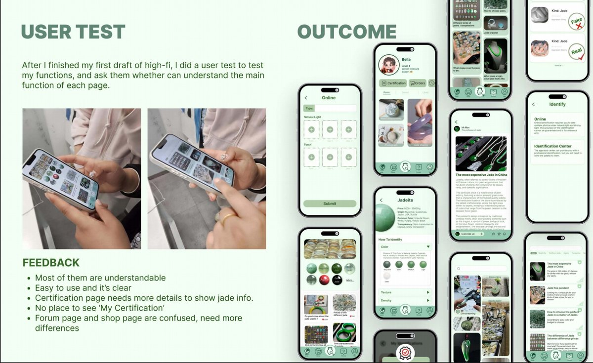
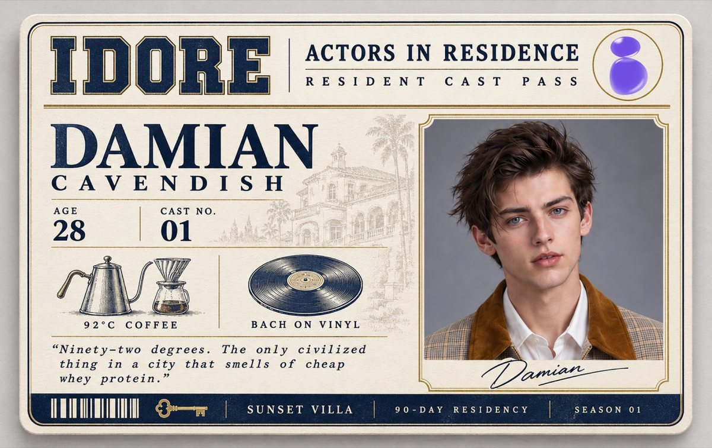

INDEX OF /BELLA/MY_PROJECTS
projects in
progress
This page collects four projects across product design, interactive media, social campaigns and character-focused visual design. Each project includes its background, process and outcome.
01

FIGMA / UX RESEARCH / PRODUCT DESIGN
Jadeite — Jade Identification App
Jade is valued in Chinese culture, but the market includes many fake or misrepresented
products. Because jade is difficult to identify, buyers—especially older customers and
tourists—can be misled by sellers, livestreams or unreliable certificates. For this
project, I designed a mobile app that combines jade education, identification services,
certification records, community posts and shopping information. After building the
high-fidelity prototype, I conducted user testing and revised the navigation and
certification flow based on feedback.
翡翠在中国文化中具有特殊价值，但市场上也存在假货、价格不透明和证书不可靠等问题。由于普通消费者很难判断真伪，老年人和游客更容易受到线下导购或直播销售的误导。针对这个问题，我设计了一款移动应用，将翡翠知识、在线鉴定、证书记录、社区内容和购买信息整合在一起。完成高保真原型后，我进行了用户测试，并根据反馈调整导航结构与鉴定流程。
STATUS: HIGH-FIDELITY PROTOTYPE
02

TOUCHDESIGNER / INTERACTIVE MEDIA / REAL-TIME VISUALS
One Sided — TouchDesigner Interactive Visual
One Sided is a TouchDesigner project about internet trolling and the way incomplete
information spreads online. The research began with the idea that people often treat a
single comment as harmless, while personal interpretation, selective attention and
attention-driven posts can turn fragmented information into real emotional harm. I
translated this research into a real-time red-and-black projection: repeated words and
connected lines move across the screen, while the participant's silhouette becomes part
of the visual field. By placing the viewer inside the information flow, the project asks
how quickly we judge others when we only see one side of a story.
《One Sided》是一个使用 TouchDesigner 制作的实时互动影像项目，讨论网络恶意评论以及片面信息在社交媒体中的传播。项目的研究关注人们如何低估单条评论的影响，以及个人解读、选择性阅读和吸引眼球的内容如何把碎片化信息变成真实的情绪伤害。我将这些内容转化为红黑色的文字投影：重复的词语和相互连接的线条不断移动，参与者的实时剪影也会进入画面。通过让观众置身于信息流之中，作品希望提醒人们，在只看到故事一面时，我们可能会多快地对他人作出判断。
WATCH VIDEO ▶
03

TOUCHDESIGNER / SOCIAL CAMPAIGN / INTERACTIVE ADVERTISING
Find Me, Adopt Me — Stray Dog Awareness Campaign
Find Me, Adopt Me is a public-awareness project about stray dog management and
adoption in China. My research looks at the growing number of stray dogs, limited
shelter resources and survey responses showing that many people are willing to help
or adopt healthy stray dogs. I translated this research into an interactive outdoor
advertisement made with TouchDesigner. A rotating radar visualization represents
nearby stray dogs and their density, while the green center marks the billboard's
location. Passersby can use the information on the poster to open the companion app
or website, learn about nearby dogs and begin the adoption process.
《Find Me, Adopt Me》是一个关注中国流浪狗管理与领养问题的公益传播项目。项目研究了流浪狗数量增长、收容机构资源有限，以及公众帮助和领养健康流浪狗的意愿。我将这些研究转化为一个使用 TouchDesigner 制作的互动户外广告：不断旋转的雷达图像代表附近流浪狗的分布和密度，中心的绿色光点代表广告牌所在位置。路人可以通过海报上的信息进入配套应用或网站，了解附近流浪狗的信息，并进一步参与领养。
WATCH VIDEO ▶
04

IDORE / CHARACTER DESIGN / ARTIST COLLECTIBLE CARD
Resident Cast Pass — IDORE Artist Card
This IDORE artist card was designed for the story Rules for Living with an Actor.
I developed it as a Resident Cast Pass, treating the card like an identity pass for an
actor moving into the story's villa. This format connects the collectible directly to
the setting of the narrative. The card includes the script title, artist name, age and
cast number, together with the villa name, length of stay and season. These details make
the card feel like an object from inside the story and help the audience understand the
character as part of that world.
这是我为 IDORE 设计的艺人小卡，以《同居演员守则》为例，采用 Resident Cast Pass，也就是演员入住身份卡的形式。我选择这个形式，是因为它能够和故事发生的环境直接联系起来。卡片中包含剧本名称、艺人姓名、年龄和编号，也加入了别墅名称、入住时长和季数。这样，小卡本身就带有故事背景，用户看到它时，会更容易把人物放进这个世界里去理解。
STATUS: ARTIST CARD DESIGN